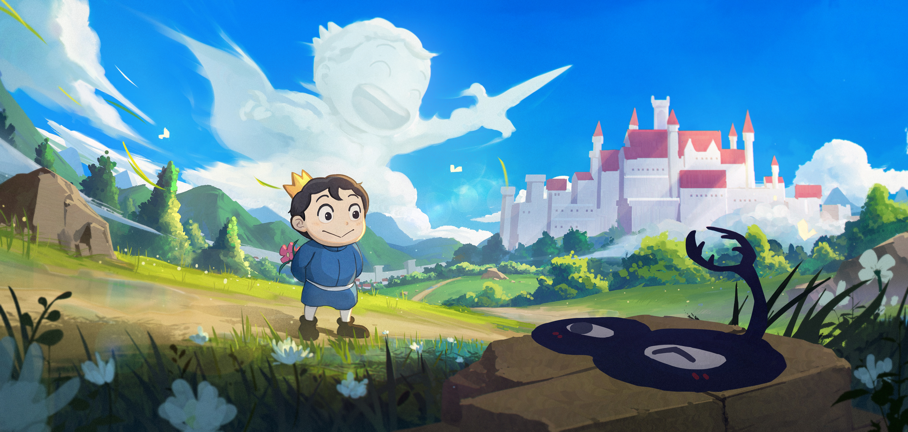
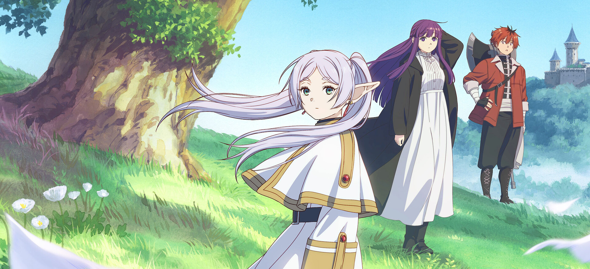
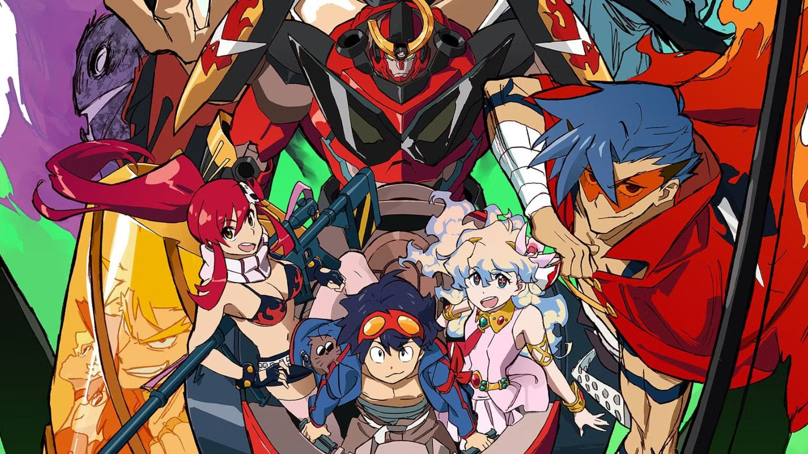
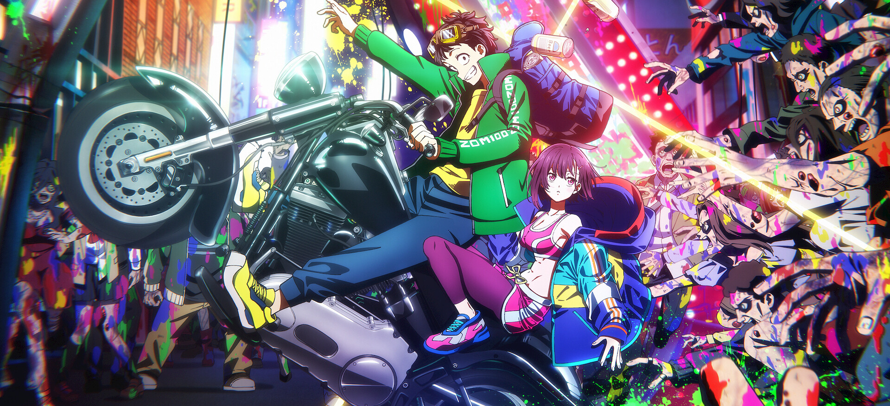
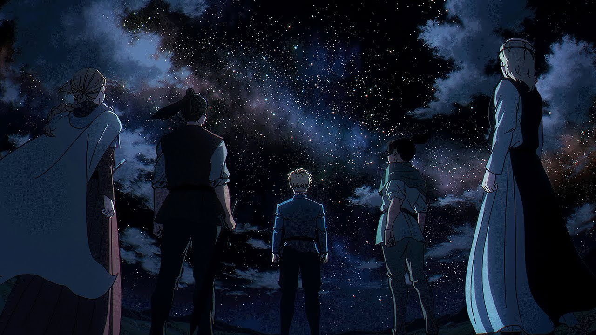
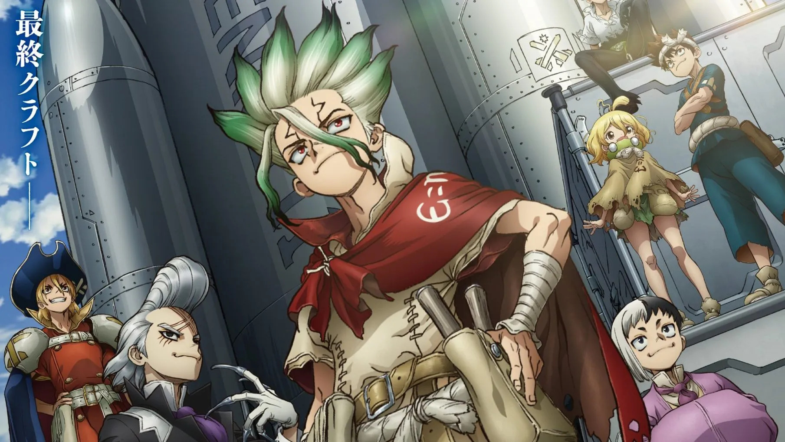

With thousands of anime out there, finding one that fits your interests can be hard. Whether you’re into action, romance, fantasy, or psychological thrillers, there is always an anime worth watching. These anime are intriguing due to their unique stories, characters, and memorable moments.
If you’re having trouble deciding what to watch next, here are six (6) anime recommendations from different genres that will definitely get you hooked.
1. Ranking of Kings

Ranking of Kings
Genre: Fantasy, Adventure, Drama
The art style might seem cute, but don’t let it fool you. Ranking of Kings is surprisingly emotional with its story that goes beyond the usual fantasy adventure. The thing that makes this anime special is how it portrays kindness, and determination. The story revolves around Bojji who dreams of becoming a great king despite constantly being underestimated due to him being mute and deaf. If you like stories that make you feel emotional, and appreciate a character’s growth, this one deserves to be in your watchlist
2. Frieren: Beyond Journey's End

Frieren: Beyond Journey's End
Genre: Fantasy, Adventure, Drama
Have you ever wondered what happens after the heroes kill the Demon Lord and save the world? Frieren explores exactly that. This anime is special because it takes a more meaningful approach by exploring memories, relationships, and the fleeting passage of time. I recommend this anime to anyone who likes a slow-paced anime with meaningful storytelling and world-building.
3. Tengen Toppa Gurren Lagann

Tengen Toppa Gurren Lagann
Genre: Action, Adventure, Mecha, Sci-Fi
If you’re looking for an anime that makes you feel motivated, Gurren Lagann is definitely worth watching. Its battles, energetic characters, and incredible sense of adventure makes it stand out from other mecha anime. But what makes this anime really special is its character development and its message of believing in yourself and pushing beyond your limits. It’s the kind of anime that will make you feel inspired after watching it.
4. Zom 100: Bucket List of the Dead

Zom 100: Bucket List of the Dead
Genre: Comedy, Suspense, Survival
You’d think everyone would be scared and saddened if a zombie apocalypse were to happen, but not Akira Tendou. Zom 100 explores the dark side of Japanese workplace culture, where Akira becomes a deeply overworked corporate slave. However, when a zombie apocalypse breaks out, he finds himself ecstatic because it frees him from his job, allowing him to finally live his life to the fullest by completing his 100-item bucket list.
5. Orb: On the Movements of the Earth

Orb: On the Movements of the Earth
Genre: Historical, Drama
Everyone once believed that the Earth was at the center of the universe, and in this anime, that belief is challenged by individuals who risk everything to uncover the truth about the Earth’s movement around the Sun. Orb explores the endless pursuit of knowledge, the courage to challenge beliefs, and the sacrifices people make for the sake of truth. What makes this anime memorable to me is how thought-provoking its story is and it is definitely worth checking out.
6. Dr. Stone

Dr. Stone
Genre: Adventure, Comedy, Sci-Fi
Ever wondered what would happen if humans suddenly lost all its technology but still retained the knowledge of how to recreate it? That is the idea that Dr. Stone explores. It takes science and turns it into an exhilarating adventure filled with inventions, discoveries, and an incredible sense of humor.